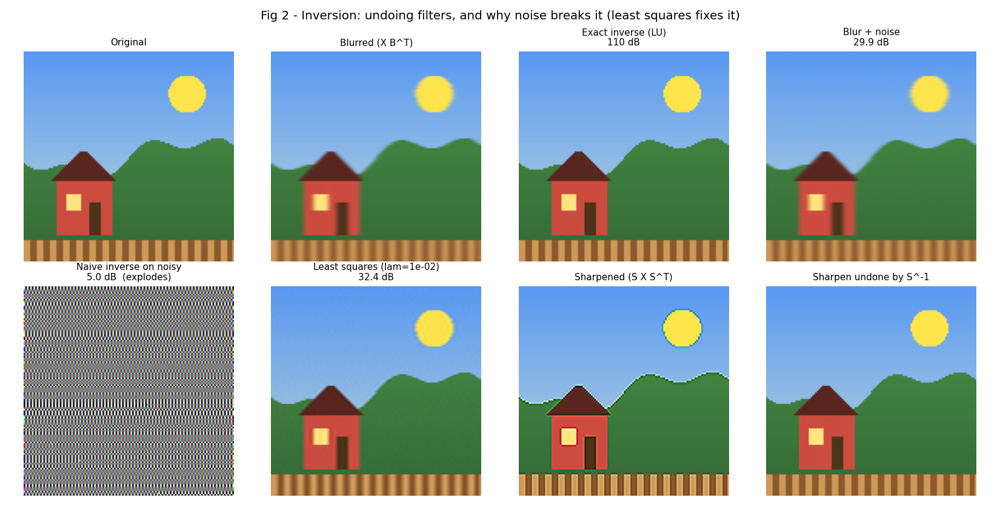
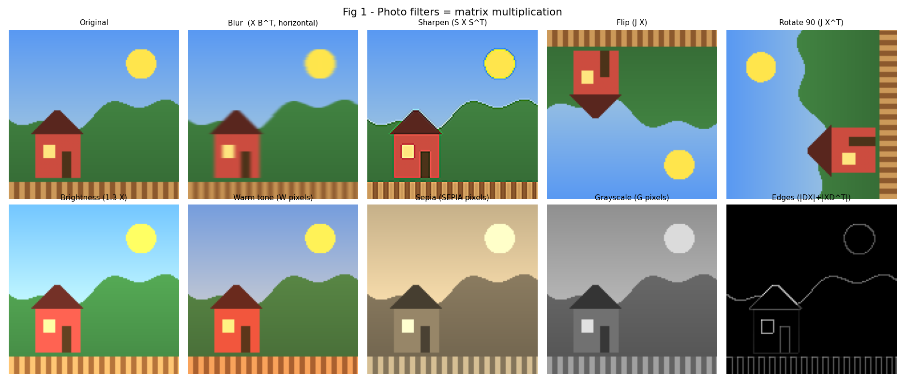
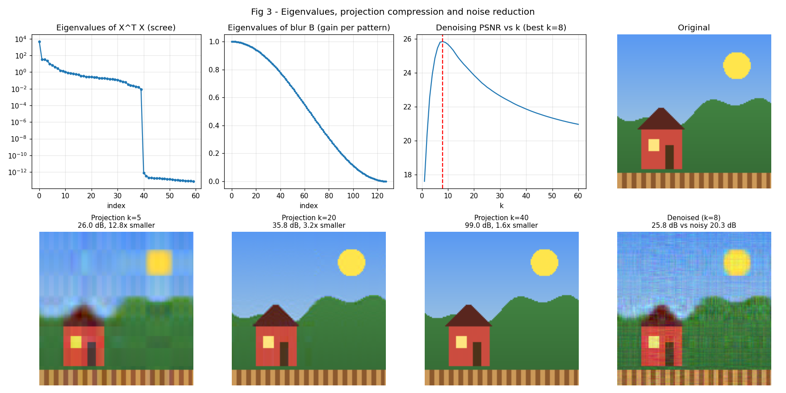

A photo is a matrix. A filter is a matrix. Undoing it means inverting it.
Linear Algebra mini project: matrix multiplication, inversion and photo filters, built with numpy and a hand-written RREF, LU and Gram-Schmidt.

Results
| Experiment | Outcome |
|---|---|
| Blurred photo vs original | 29.9 dB |
| Exact inverse (LU solve), no noise | 109.9 dB, essentially perfect |
| Exact inverse after noise (σ = 0.002) | 5.0 dB, noise explodes |
| Least-squares deblur (λ = 0.01) | 32.4 dB |
| Sharpen then S-1, warm tone then W-1 | recovered to about 1e-15 |
| Grayscale matrix | rank 1, cannot be inverted |
| Projection compression, k = 5 / 10 / 20 | 12.8x / 6.4x / 3.2x smaller; 26.0 / 30.4 / 35.8 dB |
| Noise reduction by projection (σ = 0.10) | 20.3 dB to 25.8 dB with 8 eigen-directions |
Filters are matrix multiplication
Blur, sharpen, flip, edge detection, brightness, warm tone, sepia and grayscale are each a matrix applied to the photo's pixel matrix.

Why blur is hard to undo
The blur matrix is symmetric, so B = P D PT. Its smallest eigenvalue is 1.5e-4, so zig-zag patterns are almost erased. Inverting multiplies those components back up by a huge factor, and noise rides along. Projection onto the few strongest eigen-directions keeps the photo and drops most of the noise.

The workflow
- Photo becomes a matrix; filters become matrices.
- RREF and LU simplify matrices and show which are invertible.
- Rank and nullity explain which filters lose information.
- Pivot columns give a basis; Gram-Schmidt makes it orthonormal.
- Inversion undoes sharpen, warm tone, flip and blur.
- Least squares stabilises deblurring when there is noise.
- Projection compresses and denoises.
- Eigenvalues and diagonalization explain why it all behaves this way.
Run it yourself
photo_filters_la.py · console output · README and viva notes
Install numpy, matplotlib and Pillow, then run python photo_filters_la.py my_photo.jpg.